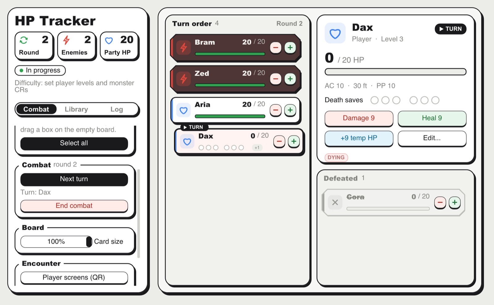
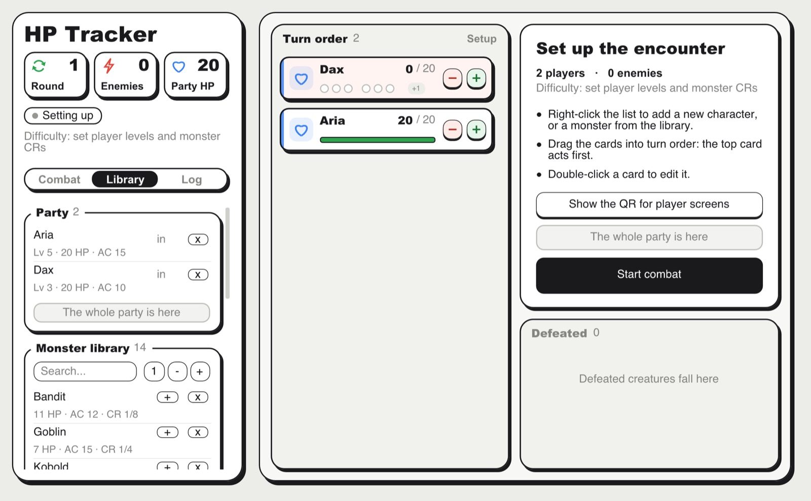
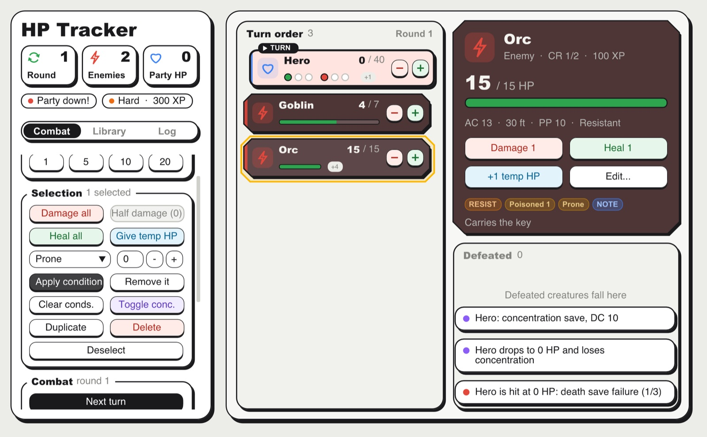
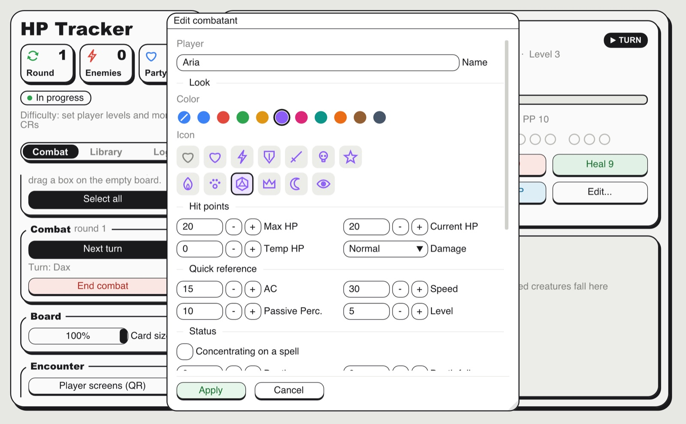
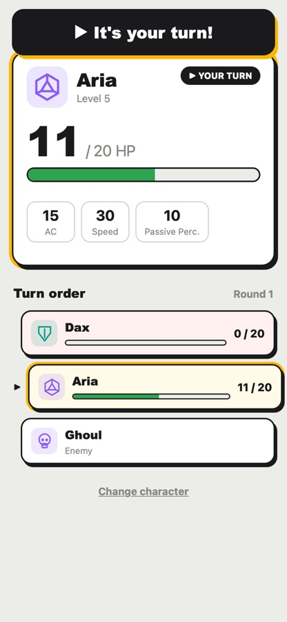

Turn order by hand
Drag the cards into the order your table agreed on. One click passes the turn, and rounds count themselves.
Free combat tracker for 5e
HP Tracker keeps count of hit points, turns, conditions and death saves at your table, so you can keep your eyes on the players.

Dice, minis, voices and the rules discussions stay at the table. HP Tracker only does the bookkeeping: who has the turn, how much damage went through the resistance, whose concentration is at risk.
Try it: take a few hit points off the goblin, heal Aria, pass the turn.
What it does
Drag the cards into the order your table agreed on. One click passes the turn, and rounds count themselves.
Resistance, vulnerability, immunity and temporary HP are applied for you. Hit a whole group at once, or half damage for those who saved.
Players at 0 HP get their death save pips. When a concentrating caster takes damage, the save DC pops up.
Poisoned for 3 rounds? It counts down by itself and tells you when it ends.
Save your players once and bring them back every session. Add three goblins in one click.
From Easy to Deadly, worked out from the party's levels and the monsters' challenge ratings, with the XP award.
Wrong target? Cmd+Z or Ctrl+Z puts it back, whatever it was.
Close it mid-fight and pick up next week exactly where you left off.




Player screens
Show a QR code, the players scan it and pick their character. Each one sees their HP, the turn order and an "It's your turn!" banner when it's their go.
Download
Version 2.2.1. Nothing to install: unzip and open.
Windows 10 or 11, 64-bit
DownloadApple Silicon (M1 or newer)
DownloadWhy the warnings? The app isn't signed with a paid developer certificate, so Windows and macOS ask you to confirm the first time. It doesn't need the internet and sends nothing anywhere.
Questions
Yes. No account, no ads, no subscription.
No. The player screens only need the phones on the same Wi-Fi as the computer.
Not yet. Today it runs on Windows 10/11 and on Macs with Apple Silicon. Phones and tablets can follow the fight through the player screens.
On your computer only. Windows: %APPDATA%\HotelWorkshop\HPTracker. Mac: ~/Library/Application Support/HotelWorkshop/HPTracker. Updating the app keeps them.
No. HP Tracker is an independent fan-made tool for games using the fifth edition rules. It is not affiliated with or endorsed by Wizards of the Coast.